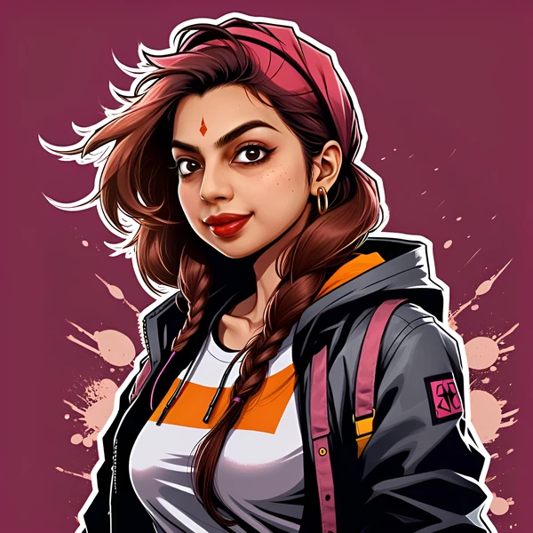
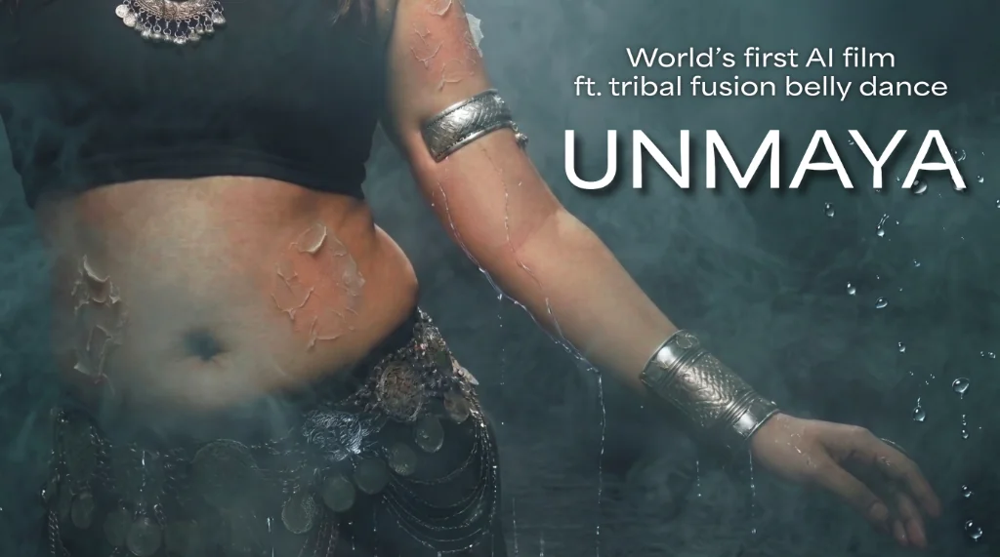
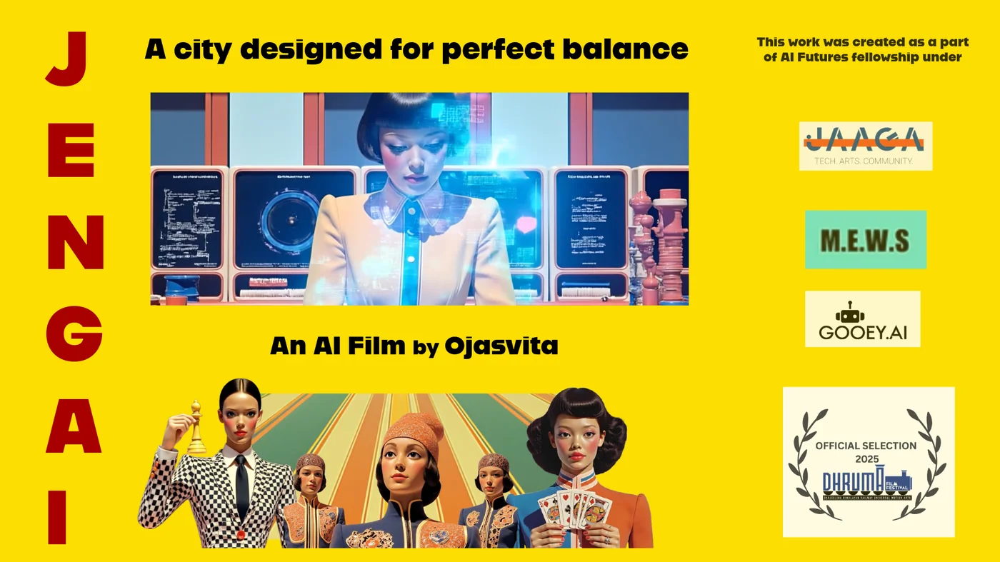
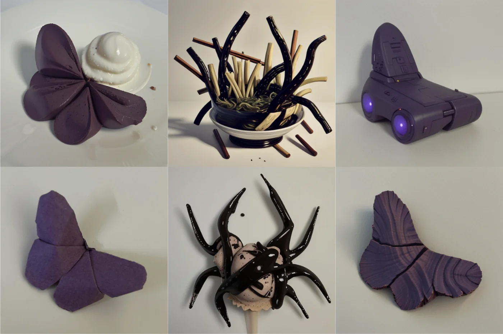
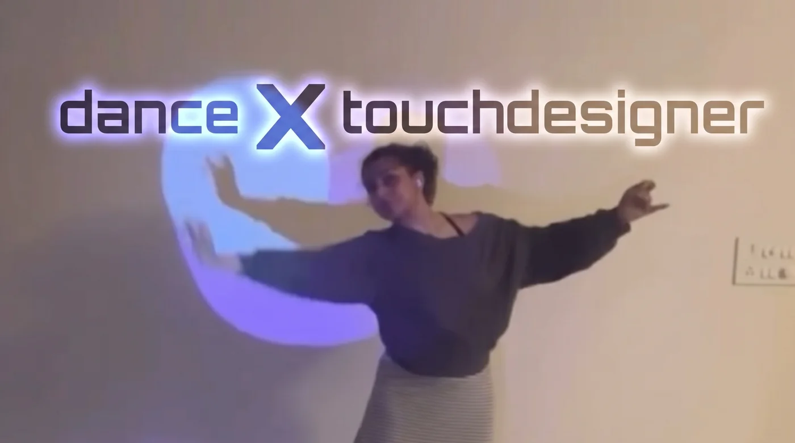

Machine Learning Engineer
Creative Technologist
Dancer

Ojasvita
click to know about meMachine Learning Engineer
Gen AI Engineer
Custom LoRA and VLMS for real world educational math image dataset
Sr. Deep Learning Engineer
Deployed real-time edge computer vision & multi-camera tracking systems across 700+ retail stores in the US; 3D point cloud calibration.
Software Developer R&D
Engineered 5G telecom core infrastructure modules, protocol stack optimization, and high-performance system debugging.
Dual Degree Project
Collaborative automotive project: Simulated human visual search patterns in road video localization using attention-based reinforcement learning.
Creative Technologist

Unmaya: AI × TFBD (Tribal fusion belly dance)
‘Unmaya - A woman, a dance and her body in between’ is an AI short film that delves into an Indian woman's body image and mental health as she indulges in tribal fusion belly dance, a movement form she has come to love.

JengAI: AI Film
JengAI is a short film about speculative futures, inspired by the games we played as children and the critical questions we ask about technology, control, and creativity. It was created during the AI Futures Fellowship and screened at the Dhruma Film Festival, Darjeeling 2025.
Hide Else, AI Seeks
An interactive hide-and-seek installation where visitors playfully test ways to outsmart and evade AI detection. Built using Pygame, computer vision, and physical sensor systems to spark curiosity around machine perception.

Origami × AI
Mixed media practice blending AI (Stable Diffusion) and origami fold images.
Dancer
Kathak Senior Diploma
Certified Kathak dancer training under the formal Prayag Sangeet Samiti curriculum (Senior Diploma, equivalent to bachelor's degree level). Active stage performer across solo and group cultural showcases.

Dance × TouchDesigner
Elton John dance cover movement-reactive spotlight using TouchDesigner exploring phygital performance.